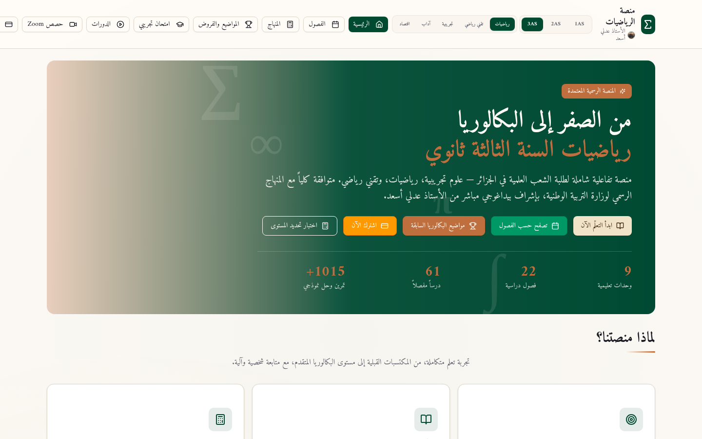
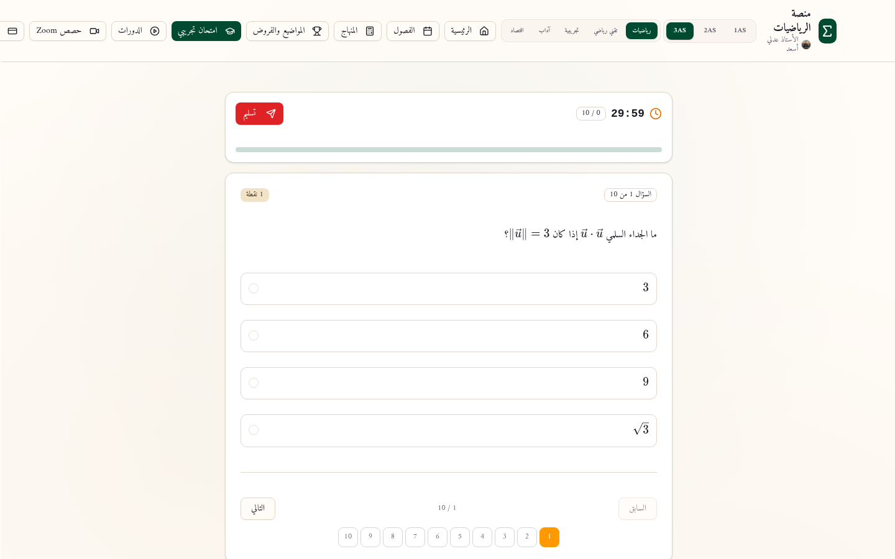
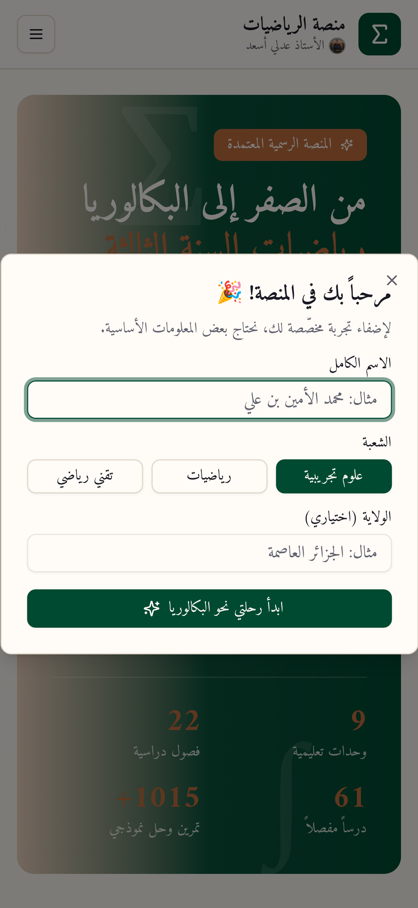

«منصة الرياضيات» هي منصة تعليمية تفاعلية موجّهة لطلبة السنة الثالثة ثانوي في الشعب العلمية (علوم تجريبية، رياضيات، تقني رياضي) في الجزائر، تحت الإشراف البيداغوجي المباشر للأستاذ عدلي أسعد. تعمل المنصة بتقنيات حديثة (Next.js على بنية Vercel) وتعرض نفسها كمنهج رقمي متوافق كلياً مع برنامج وزارة التربية الوطنية، منذ المكتسبات القبلية وحتى مستوى البكالوريا المتقدم. خلال هذه المراجعة تنقّلنا فعلياً في صفحات المنصة: الرئيسية، الفصول، صفحات الوحدات والدروس، المُمتحن التجريبي، لوحة الطالب، الباقات، أداة رسم الدوال، والمساعد الذكي، إضافة إلى اختبار العرض على شاشة الهاتف.
الخلاصة العامة إيجابية مع تحفّظات واضحة: المنصة تتمتع بهوية بصرية احترافية ناضجة، وتصيير رياضي ممتاز عبر KaTeX، وبنية أمنية قوية، وتجربة امتحان تفاعلية مكتملة الأركان. في المقابل، رصدنا خللين حرجين يمسّان الوظائف الموعودة مباشرة (تعطّل المساعد الذكي بخطأ خادم 500، وتسرّب صيغة Markdown الخام داخل نصوص الدروس)، إضافة إلى نقطة ضعف بنيوية في السيو تتمثل في غياب الروابط الدائمة لكل قسم ودروس يمكن فهرستها. جميع الأخطاء المكتشفة قابلة للإصلاح بجهد هندسي معقول، وجدولها التفصيلي في القسم السابع.
| المحور | التقييم | المؤشر المحدد للتقييم |
|---|---|---|
| التصميم وتجربة المستخدم | 9.0 / 10 | هوية بصرية ناضجة، RTL سليم، تجربة امتحان متماسكة، استجابة ممتازة للهاتف |
| المحتوى التعليمي | 8.5 / 10 | بنية منهجية قوية وحلول مفصّلة، مع فجوات تمرين في وحدتين وتسرّب صيغ خام |
| الوظائف التفاعلية | 7.0 / 10 | ممتحن وأداة رسم ولوحة تتبّع تعمل، لكن المساعد الذكي معطّل بالكامل (500) |
| الأداء والبنية التحتية | 8.0 / 10 | تصيير مسبق وكاش CDN فعّال وصفر أخطاء كونسول، مع حِزم JS/CSS قابلة للضغط |
| SEO والوصولية | 6.0 / 10 | وسوم أساسية جيدة، لكن غياب sitemap والروابط الدائمة يقيّد الفهرسة بشدة |
| الأمان | 9.0 / 10 | CSP وHSTS وترويسات وقاية كاملة تقريباً، مع ملاحظة على unsafe-inline |
تقدّم المنصة نفسها بوصفها «المنصة الرسمية المعتمدة» لرياضيات السنة الثالثة ثانوي، وتعتمد نموذج عمل يوازن بين محتوى مجاني للتصفّح واشتراك مدفوع بمقدار 500 دينار جزائري يُدفع عبر تحويل بريدي موب (BaridiMob) ثم يُفعَّل يدوياً خلال 24 ساعة. يوجد تسجيل حساب للطالب (بريد إلكتروني وكلمة سر) عبر نافذة منبثقة، بينما يعمل ملخص التقدّم الشخصي محلياً في متصفح الطالب عبر localStorage دون الحاجة لحساب، وهو حل عميل لكنه يعني أن بيانات التتبّع لا تنتقل بين الأجهزة. بيانات التواصل الظاهرة في التذييل تشمل بريداً إلكترونياً بمجال خاص (contact@adli-math.dz) ومقرّ الجزائر العاصمة، إضافة إلى بوابة مسؤول تشير إلى مسار إداري داخلي.
من الناحية التقنية، الموقع مبني بـ Next.js (App Router) مع تصيير مسبق كامل للصفحة الرئيسية كما تؤكد الترويسات (x-nextjs-prerender: 1)، ومستضاف على Vercel مع تفعيل التخزين المؤقي على حافة الشبكة حيث أظهر فحصنا x-vercel-cache: HIT. الواجهة تستعمل Tailwind CSS، والرياضيات تُصيَّر بـ KaTeX (عبر MathML)، بينما تعمل الميزات الديناميكية عبر مسارات API من نوع Serverless: مسار للممتحن التجريبي يعمل بسلاسة، ومسار للمساعد الذكي يُرجع خطأً 500 كما سنفصّل لاحقاً.
| الطبقة | التقنية | ملاحظات المراجعة |
|---|---|---|
| الواجهة | Next.js (App Router) + React | تصيير مسبق SSG/ISR مع تحديث دوري كل 300 ثانية تقريباً |
| الاستضافة | Vercel Edge | كاش حافة فعّال (HIT)، منطقة hk1، شهادة SSL مع HSTS |
| التنسيق | Tailwind CSS | حزمة CSS كبيرة (179KB) تشير إلى احتمال عدم تنقية الفئات |
| الرياضيات | KaTeX / MathML | تصيير ممتاز في الامتحانات والدروس، غائب في بعض بطاقات الوصف |
| الواجهة الخلفية | API Routes (Serverless) | /api/mock-exam يعمل (200)، /api/ai-assistant معطّل (500) |
| حالة المستخدم | localStorage | الاسم والشعبة والتقدّم محلية للجهاز، دون مزامنة مع الحساب |
اكتشاف بنيوي: تطبيق أحادي الرابط (SPA Views)
جميع أقسام المنصة الـ 13 (الفصول، الامتحان، الباقات، لوحتي، أداة الرسم...) تُعرض كتبديلات داخلية داخل الرابط الواحد / دون تغيير عنوان الصفحة. هذا يعني عملياً: لا روابط دائمة قابلة للمشاركة، زر الرجوع في المتصفح لا يعيد المستخدم للقسم السابق، ولا يمكن لمحركات البحث فهرسة أي محتوى بعيداً عن الرئيسية. هذه أهم نقطة ضعف بنيوية في المنصة، وتُعالَج بتحويل كل قسم إلى مسار مستقل (/units/[slug]، /exam...) مع الاستفادة من التوجيه الأصلي في Next.js.

الهوية البصرية هي أوضح نقاط القوة في المنصة. لوحة ألوان داكنة خضراء مع لمسات ذهبية/نحاسية تمنح إحساساً مؤسسياً مريحاً بعيداً عن برودة مواقع التقنية، مع خط عربي شعبي (ناسخ) عالي الجودة للنصوص وأقراص تنقّل علوية منظمة بحسب المستوى (1AS/2AS/3AS) والشعبة. اتجاه RTL مُنفَّذ بشكل صحيح في كل الصفحات التي فحصناها، ولم نرصد أي تجاوز أفقي للشاشة على الهاتف (عرض 393 بكسل)، مع قائمة همبرغر وظيفية. اختبرنا أيضاً العرض بجهاز آيفون محاكى وتولّد الواجهة دون كسور أو تداخل عناصر.
تبدأ الرحلة بنافذة ترحيب تطلب اسم الطالب وشعبته (والولاية اختيارياً) ثم تخصّص المحتوى بناءً عليها — لمسة تخصيص جيدة بيداغوجياً، لكنها تتكرر عند كل جهاز جديد لأنها مخزّنة محلياً. اختبرنا الامتحان التجريبي بالكامل: توليد عشوائي للأسئلة مع عدّاد أسئلة (5 إلى 20) ومدة (15 إلى 90 دقيقة)، مؤقّت تنازلي يعمل، شريط تقدّم، تصيير رياضي نظيف للمعادلات، تنقّل شبكي بين الأسئلة، وزر تسليم واضح. كما فحصنا أداة رسم الدوال التي تقبل صيغة JavaScript (Math.sin(x) مثلاً) وترسم المنحنى تفاعلياً مع نطاق x قابل للتعديل ولون منحنى قابل للاختيار.
- نقاط قوة: تجربة امتحان مكتملة الأركان، لوحة تتبّع بإحصاءات ونسب نجاح وتقدّم عام على 1015 تمرين، فضاء مخصص لأولياء الأمور، صفحة حصص Zoom تُظهر 5 حصص أسبوعياً وأكثر من 500 طالب منتظم، وأداة رسم تعمل دون تسجيل.
- نقاط احتكاك: الدفع يدوي بالكامل (تحويل BaridiMob + تعبئة نموذج بالاسم والهاتف ورقم العملية + انتظار تفعيل يدوي حتى 24 ساعة)، وهو أعلى مصدر فقدان للمشتركين المحتملين؛ نافذة الترحيب تظهر مجدداً في كل زيارة من جهاز جديد؛ وحدود العلاقة بين الحساب المسجّل والتقدّم المحلي غير واضحة للمستخدم.
- لافتة إيجابية: صفر أخطاء في كونسول المتصفح خلال كل جلسة التنقّل — مؤشر جودة بناء مرتفع لمشروع بهذا الحجم.


البنية التعليمية منظمة على ثلاث طبقات: وحدات تعليمية (9) تغطي محاور المنهاج الرسمي من المحور الأول (دراسة الدوال) إلى المحور العاشر (الحساب وقابلية القسمة)، وتنقسم كل وحدة إلى فصول دراسية ودروس مفصّلة بمدة تقديرية بالدقائق، مع أعلام «فيديو متاح» و«ملخص نهائي». كل وحدة تُظهر شعبتها المستهدفة (كل الشعب العلمية أو رياضيات/تقني رياضي تحديداً) وتدرّجها المقرر في الفصول الثلاثة، وهو مستوى دقّة بيداغوجية يُحسب للمنصة. الدروس المفحوصة تتضمن منهجية دراسة الدالة في تسع خطوات من مجال التعريف إلى الرسم البياني، مع مراجعة المكتسبات القبلية قبل الدرس.
لكن الفحص العدّادي يكشف فجوة لافتة: وحدتا الحساب التكاملي والمعادلات التفاضلية تعرضان 10 و5 تمارين فقط، مقابل 125 إلى 206 تمارين في بقية الوحدات. هذا اختلال واضح في اكتمال البنك، خصوصاً أن التكامل محور أساسي في البكالوريا لكل الشعب العلمية. إضافة إلى ذلك، رصدنا ثلاث مشاكل عرض في المحتوى: تسرّب صيغة Markdown الخام (**نص**) داخل نصوص الدروس ورسالة ترحيب المساعد الذكي، ظهور معادلة y' = ay + b بصيغة LaTeX خام بين علامتي دولار في وصف وحدة المعادلات التفاضلية على بطاقة الرئيسية، وتكرار ترقيم الوحدات (وحدتان برقم 6 ووحدتان برقم 7) في بطاقات الرئيسية وقائمة الفصول.
| الوحدة | الفصل | الشعب | التمارين | الملاحظة |
|---|---|---|---|---|
| دراسة الدوال الشاملة | الأول | كل الشعب العلمية | 206 | الوحدة الأغنى، منهجية 9 خطوات |
| المتتاليات العددية | الأول | كل الشعب العلمية | 137 | تغطية حسنة |
| الدوال الأسية واللوغاريتمية | الثاني | كل الشعب العلمية | 134 | تغطية حسنة |
| الأعداد المركبة | الثاني | رياضيات / تقني رياضي | 134 | تغطية حسنة |
| الاحتمالات | الثاني | كل الشعب العلمية | 125 | تغطية حسنة |
| الحساب التكاملي | الثالث | كل الشعب العلمية | 10 | فجوة محتوى خمس فصول مقابل 10 تمارين |
| المعادلات التفاضلية | الثالث | رياضيات / تقني رياضي | 5 | فجوة محتوى أقل وحدة اكتمالاً |
| الهندسة في الفضاء | الثالث | رياضيات / تقني رياضي | 132 | تغطية حسنة |
| الحساب وقابلية القسمة | الثالث | رياضيات | 132 | تغطية حسنة |
خلاصة المحتوى: الجودة البيداغوجية عالية (حلول خطوة بخطوة مع تلميحات قبلية، منهجية مبرزة، ربط صريح بمحاور المنهاج)، لكن الاكتمال غير متوازن بين الوحدات، وأخطاء العرض الثلاث (Markdown، LaTeX، الترقيم) تُضعف المصداقية أمام الطالب رغم بساطة إصلاحها تقنياً.
قياساً فعلياً لأصول الصفحة الرئيسية، يبلغ حجم HTML نحو 97 كيلوبايت (يتضمن حمولة RSC الخاصة بـ Next.js)، وتُحمَّل 12 حزمة JavaScript بإجمالي نحو 686 كيلوبايت غير مضغوطة، أكبرها حزمة وحيدة بـ 219KB وحزمة بـ 117KB. حجم CSS يبلغ نحو 183KB أغلبها حزمة واحدة بـ 179KB — وهو رقم مرتفع نسبياً يوحي بأن Tailwind تُبنى دون تنقية كاملة أو أن أنماط KaTeX مضمنة كاملة. الخطوط مُحمَّلة مسبقاً بصيغة woff2 مع font-display: swap، وصورة المشرف مُحمَّلة مسبقاً أيضاً، وهما ممارستان صحيحتان تحسّنان الانطباع الأول.
على مستوى البنية، الاستجابة سريعة بفضل التصيير المسبق وكاش الحافة (وصلتنا الصفحة من الكاش مباشرة)، ولم نصادف أي خطأ كونسول أو تحذير أثناء الجلسة الكاملة. الحمل الكلي (~970KB غير مضغوط، أي ما يقارب 250-300KB عبر الضغط) مقبول لتطبيق تعليمي تفاعلي، لكنه يترك مجال تحسين واضح: تقسيم KaTeX وأداة الرسم بشكل كسول (lazy) عند الحاجة فقط، وضغط حزم CSS عبر مراجعة إعدادات Tailwind، ثم استغلال تقسيم المسارات تلقائياً متى ما تحوّلت الأقسام إلى روابط دائمة مستقلة.
| الأصل | الحجم | التقييم |
|---|---|---|
| HTML (الرئيسية) | ~97 KB | طبيعي لـ Next.js مع حمولة RSC مضمّنة |
| JavaScript (12 حزمة) | ~686 KB | أكبر حزمة 219KB؛ يُنصح بتقسيم كسول لأدوات الرسم وKaTeX |
| CSS (حزمتان) | ~183 KB | حزمة 179KB مرتفعة؛ يُراجع تنقية Tailwind |
| الخطوط (woff2) | 5 ملفات | محمّلة مسبقاً بشكل صحيح مع swap |
| الترويسة الأمنية | الحالة | التفصيل |
|---|---|---|
| Content-Security-Policy | مفعّلة | سياسة شاملة، مع السماح بـ unsafe-inline/unsafe-eval في السكربتات (يُخفّض الحماية ضد XSS) |
| Strict-Transport-Security | مفعّلة | سنتان مع includeSubDomains وpreload |
| X-Frame-Options / frame-ancestors | مفعّلة | حماية من تضمين الصفحة في إطارات خارجية (Clickjacking) |
| X-Content-Type-Options | مفعّلة | nosniff يمنع تخمين أنواع الملفات |
| Referrer-Policy | مفعّلة | strict-origin-when-cross-origin |
| Permissions-Policy | مفعّلة | الكاميرا والميكروفون والموقع معطّلة — إعداد مثالي لمنصة تعليمية |
الأساسيات موجودة ويجب الإشادة بها: عنوان صفحة وصفي بالعربية، وصف ميتا غني ومكتوب بيداغوجياً، كلمات مفتاحية مناسبة، ووسوم Open Graph مع تعريف لغة صحيح (ar_DZ) وبطاقات Twitter. ملف robots.txt موجود ويسمح لكل الزواحف المعروفة. كما أن التصيير المسبق يجعل محتوى الرئيسية قابلاً للفهرسة فعلياً، وهو أفضل مما تفعله معظم تطبيقات SPA التقليدية.
غير أن الأثر الفعلي لهذه الأساسيات محدود بسبب ثلاث فجوات متراكبة: أولاً، غياب خريطة الموقع (sitemap.xml يُرجع 404) ما يعني أن محركات البحث لا تملك دليلاً بنيوياً لمحتوى الموقع. ثانياً، غياب الرابط الأساسي (canonical) وصورة المشاركة (og:image) ما يجعل أي مشاركة للمنصة على واتساب أو فيسبوك تظهر دون معاينة بصرية — وهذه ثغرة تسويقية حقيقية لمنصة تستهدف مراهقين يعيشون على تطبيقات التواصل. ثالثاً والأهم، البنية أحادية الرابط التي شرحناها في القسم الثاني تجعل 61 درساً و1015 تمريناً غير مرئية للفهرسة إطلاقاً؛ من الصفحة الواحدة لا يستطيع غوغل معرفة وجود «دراسة الدوال الشاملة» ككيان مستقل يستحق الترتيب في نتائج البحث عن دروس البكالوريا.
أما الوصولية فالصورة مختلطة: بنية RTL سليمة، تباين ألوان مريح، وتصيير KaTeX عبر MathML يوفّر تمثيلاً دلالياً للمعادلات — وهي نقطة تفوق كثيراً من المنافسين. لكننا رصدنا في شجرة الوصولية أثناء الامتحان أن خيارات الإجابة المصيَّرة بـ KaTeX تظهر كأزرار فارغة لقارئات الشاشة (النص داخل عناصر حسابية دون بديل نصي)، ما يجعل الامتحان غير قابل للاستعمال لطالب يعتمد على هذه الأدوات. كما أن الرموز التعبيرية في عناوين الأقسام (🎉، 👋) تُقرأ حرفياً في الأدوات المساعدة وتستحق aria-label توضيحياً أو إزالتها من العناوين الدلالية.
| العنصر | الحالة | الأثر والتوصية المختصرة |
|---|---|---|
| العنوان والوصف والكلمات المفتاحية | متوفر | جودة عربية ممتازة ومتوافقة مع نية البحث للطلبة |
| Open Graph + Twitter Cards | متوفر | مفعّلة مع ar_DZ، لكن دون صورة مشاركة |
| robots.txt | متوفر | سماح عام لكل الزواحف دون قيود |
| sitemap.xml | مفقود | 404 فعلي؛ يُولَّد تلقائياً من Next.js بعد بنية المسارات |
| الرابط الأساسي canonical | مفقود | يمنع تضارب الفهرسة بين نسخ الرابط |
| og:image / twitter:image | مفقود | مشاركات التواصل بلا معاينة؛ بطاقة 1200×630 تكفي |
| روابط دائمة للدروس | مفقود | الحد الأعلى لإمكانات SEO الحالية؛ يتطلب إعادة هيكلة المسارات |
| وصولية خيارات الامتحان | جزئي | خيارات KaTeX بلا بديل نصي لقارئات الشاشة |
رُصدت الأخطاء التالية خلال جلسة مراجعة فعلية واحدة (تنقّل كامل عبر الأقسام، محاكاة هاتف، وتتبّع لطلبات الشبكة). رتّبناها بحسب الخطورة: «حرج» يعطل ميزة معلَنة بالكامل أو يضر بالثقة، «عالٍ» يحدّ من الوصول أو النمو، «متوسط» يمس الجودة أو التحويل، و«منخفض» تحسين تكميلي. كل بند مقرون بموقع الدقة والتوصية، وجميعها قابلة للإصلاح دون إعادة بناء.
| # | الخطأ | الخطورة | الموقع | الوصف والإصلاح المقترح |
|---|---|---|---|---|
| 1 | تعطّل المساعد الذكي | حرج | /api/ai-assistant | الطلب يُرجع HTTP 500 دائماً («عذراً، حدث خطأ»). يُفحص سجل Vercel ومفاتيح مزوّد النموذج وتكوين المسار؛ الميزة معلَنة في القائمة الرئيسية ومعطّلة تماماً. |
| 2 | تسرّب صيغة Markdown | حرج | نصوص الدروس، ترحيب المساعد | علامات **غامق** تظهر كما هي. يُدخل مُحلّل Markdown (react-markdown + remark-math + rehype-katex) في خط العرض الموحّد. |
| 3 | لا روابط دائمة للأقسام | عالٍ | كل الأقسام (13 عرضاً) | كل المحتوى تحت / دون تغيير URL. يُعتمد التوجيه الفعلي في Next.js لمسار لكل وحدة/درس/أداة. |
| 4 | غياب sitemap.xml | عالٍ | /sitemap.xml | 404 فعلي. يُولَّد تلقائياً (app/sitemap.ts) متى ما توفرت مسارات حقيقية للمحتوى. |
| 5 | غ canonical وog:image | متوسط | وسوم الصفحة | لا رابط أساسي ولا صورة مشاركة اجتماعية. يُضاف ميتا لكل مسار مع بطاقة صورة مشاركة 1200×630 بهوية المنصة. |
| 6 | تكرار ترقيم الوحدات | متوسط | بطاقات الرئيسية والفصول | وحدتان برقم 6 ووحدتان برقم 7 (ناتج إعادة ترقيم محلي داخل كل فصل على الأرجح). توحيد الترقيم أو إظهار «الوحدة X — الفصل Y». |
| 7 | LaTeX خام في أوصاف البطاقات | متوسط | وصف وحدة المعادلات التفاضلية | نص المعادلة y' = ay + b يظهر في البطاقة محاطاً بعلامتي الدولار الخام دون تصيير. تصيير KaTeX في الوصف أو استبداله بصياغة نصية. |
| 8 | فجوة تمارين وحدتين | متوسط | التكاملي (10)، التفاضلية (5) | أقل من 1% من متوسط بقية الوحدات (125-206). أولوية إثراء قبل موسم البكالوريا. |
| 9 | رقم هاتف عنصر نائب في التذييل | منخفض | تذييل «تواصل معنا» | الرقم الظاهر تبقى على صيغة عنصر نائب (أصفار). يُستبدل بالرقم الفعلي أو يُحذف حقل الهاتف. |
| 10 | تفعيل الاشتراك اليدوي | منخفض | صفحة الباقات | تحويل BaridiMob + تفعيل بشري حتى 24 ساعة. يُخفَّض الاحتكاك برمز تفعيل آلي بعد التحقق من العملية. |
نقترح خارطة طريق من ثلاث مراحل مرتّبة بالأثر مقابل الجهد: تبدأ بالمرحلة الأولى بإصلاحات يمكن إنجازها في أيام معدودة وتُعيد للمنصة مصداقيتها الوظيفية كاملة، ثم مرحلة بنيوية تفتح أبواب النمو العضوي عبر محركات البحث والمشاركة، وأخيراً مرحلة نمو ترفع التحويل والاحتفاظ. الترتيب مقصود: كل مرحلة تُمهّد للتي تليها تقنياً، خصوصاً أن إصلاح العرض (المرحلة 1) شرط تقني مباشر لنجاح بنية المسارات الجديدة (المرحلة 2).
المرحلة 1 — إصلاحات عاجلة (أسبوع واحد)
تشخيص مسار المساعد الذكي وإرجاعه للعمل (فحص سجلات Vercel والمفاتيح، ثم إضافة معالجة أخطاء ورسالة حالة واضحة في الواجهة)، توحيد خط عرض المحتوى عبر محوّل Markdown/KaTeX في الدروس وردود المساعد وأوصاف البطاقات، تصحيح ترقيم الوحدات، استبدال رقم الهاتف العنصري (النائب). جهد تقديري: 2-4 أيام عمل.
المرحلة 2 — البنية والسيو (الشهر الأول)
تحويل الأقسام إلى مسارات مستقلة (وحدات، دروس، امتحان، أدوات) مع generateMetadata لكل صفحة بعنوان ووصف وصورة OG، توليد sitemap.xml تلقائياً، إضافة canonical، وربط تقدّم الطالب بالحساب المسجّل بدل الاعتماد الحصري على localStorage. هذه المرحلة تحوّل 61 درساً من محتوى خفي إلى 61 صفحة قابلة للترتيب في نتائج البحث — أكبر مكسب نمو متاح للمنصة.
المرحلة 3 — النمو والتحويل (الربع الأول)
أتمتة تفعيل الاشتراك برمز تحقق بعد التحويل البريدي، إثراء بنك تمارين التكامل والمعادلات التفاضلية، تحسين الحِزم (تقسيم كسول لـ KaTeX وأداة الرسم، مراجعة تنقية Tailwind)، تجويد الوصولية (بديل نصي لخيارات الامتحان المصيَّرة، وسوم aria للرموز التعبيرية)، وإضافة Vercel Analytics لقياس سلوك الزوار قبل وبعد المرحلتين السابقتين.
منهجية المراجعة وحدودها: أُجريت هذه المراجعة بتاريخ 18 سبتمبر 2026 عبر تنقّل فعلي كامل في واجهة المنصة بمتصفح آلي (سطح مكتب 1440 بكسل وهاتف 393 بكسل)، مع فحص مباشر للترويسات HTTP وأوزان الأصول وطلبات الشبكة وملفات robots وsitemap، وتتبّع أخطاء الكونسول وشجرة الوصولية. لم يشمل الفحص المنهج الحسابي للتمارين والحلول من حيث الصحة الرياضية، ولا جودة الفيديوهات المقفلة خلف الاشتراك، ولا أداء الخادم تحت حمل حقيقي — وهي مجالات تستحق مراجعة بيداغوجية وتقنية موسّعة لاحقاً.
الخلاصة النهائية: «منصة الرياضيات» مشروع جاد ببنية تقنية حديثة وهوية بصرية تفوق المتوسط بفارق كبير، ومحتوى بيداغوجي مبني بمنهجية واضحة تحت إشراف مذكّر باسمه وصورته — وهذه عناصر ثقة يصعب تقليدها. تقييمنا الإجمالي 7.9 من 10 اليوم، وكل البنود المرفوعة من علامة المنصة (المساعد المعطّل، تسرّب الصيغ، السيو البنيوي) قابلة للإصلاح خلال إطار زمني لا يتجاوز ربع سنة بالتزام جزئي. بتنفيذ المراحل الثلاث، نرى أن المنصة قادرة بحق على مواصلة التموضع كمرجع رقمي لرياضيات البكالوريا في الجزائر، وتقييمها يقترب حينها من 9+.